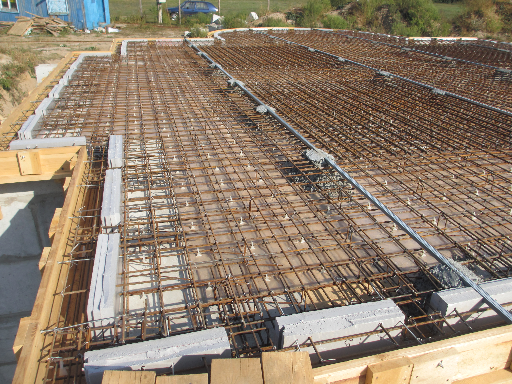
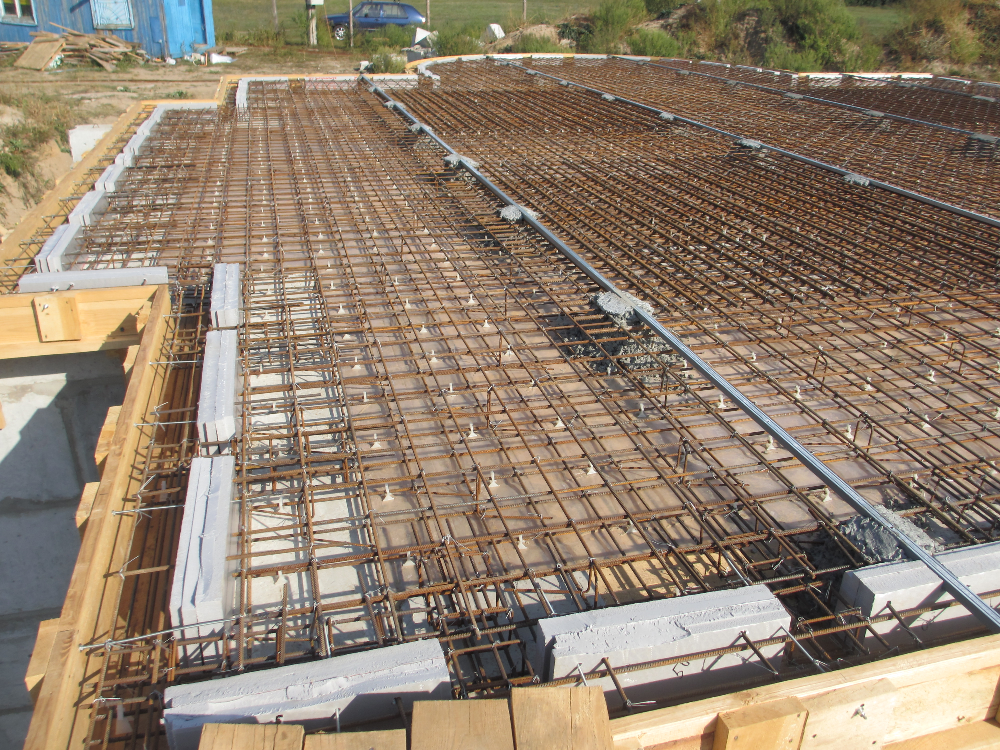

Фундаменты - наша работа!
фундаменты под ключ в Гомеле, Гомельской области, Беларуси
Наши работы
Наша организация изготавливает следующие виды фундаментов:
Ленточный
Ленточный фундамент – это железобетонная полоса, идущая по периметру всего здания. Ленту закладывают под все внутренние и наружные стены застройки, сохраняя одинаковую форму поперечного сечения по всему периметру фундамента. Ленточные фундаменты пригодны для домов с бетонными, каменными, кирпичными стенами или с тяжёлыми перекрытиями. Если в доме планируется подвал или гараж, то необходим именно такой тип фундамента.
Плитный
Плитный фундамент – монолитная железобетонная плита, которая располагается под всей площадью фундамента. Это довольно затратный тип фундамента за счёт больших расходов на земляные работы и строительный материал. Целесообразно его использовать при строительстве небольших домов, в которых сама плита выступает в качестве основания пола. Идеально подходит для небольших домов без высокого цоколя
Комбинированный
Комбинированный фундамент- это различные вариации комбинаций всех видов фундаментов, обеспечивающие вместе надежное и прочное основание в сложных геологических условиях. Комбинированные фундаменты используются для того, чтобы равномерно распределить нагрузку зданий. Это важно при строительстве домов на неровных участках, склонах, а также на проблемных грунтах.

Ленточный фундамент позволяет возводить на своем основании различные строения: от деревянных до монолитных домов. При этом использовать намного меньшее количество строительных материалов, и проводить меньшее количество земляных работ в сравнении с плитным монолитным железобетонным фундаментом, что делает ленточный фундамент самым популярным видом основания при строительстве загородных домов и дач.
Устройство ленточного фундамента производится на песчано-гравийную подушку, которая сверху покрывается гидроизоляцией во избежание её размытия грунтовыми водами. Если вес возводимого здания небольшой, например небольшой деревянный дом, то устройством подушки из песка и гравия можно пренебречь.
По способу устройства выделяют несколько видов ленточного фундамента- монолитный и сборный.
Устройство монолитного ленточного фундамента предполагает вязку арматурного каркаса и заливку его бетоном на самом строительном объекте, за счет чего и достигается целостность, или неразрывность — монолитность основания фундамента.
Сборный ленточный фундамент предполагает крепление между собой железобетонных блоков. Данное крепление выполняется посредством цемента с использованием армирования.
Операции,проводимые при установке ленточного монолитного фундамента:
- отрывается трашнея;
- внутрь этой траншеи заливается бетон поверх земли;
- на залитый поверх земли бетон, ставится опалубка, внутри которой размещается каркас из арматуры;
- внутрь опалубки заливается еще раз бетон
- разбирается опалубка и фундамент готов.
Операции,проводимые при установке ленточного-сборного фундамента:
- отрывается трашнея;
- внутрь этой траншеи, на ее дно, ставится опалубка, внутри которой размещается каркас из арматуры;
- внутрь опалубки заливается бетон;
- разбирается опалубка
- наверх уже затвердевшего бетона монтируются фундаментные блоки.


Плитное основание может иметь монолитную однородную структуру из бетона и армирование металлической арматурой для повышения прочности. Для предотвращения порчи плиты грунтовыми водами под ней обустраивается дренаж в виде подушки из песка и щебня.
Основные преимущества, которые принимаются во внимание при выборе этого типа основания:
- равномерно распределенные нагрузки от строения на грунт с малым удельным давлением из расчета на метр квадратный;
- возможность создать прочное основание на проблемных грунтах, отличающихся высокой подвижностью;
- возможность использования поверхности фундамента в качестве основы для пола в помещениях;
- высокая долговечность и прочность монолита с армированием;
- возможность возведения зданий в местах, где грунтовые воды расположены близко к поверхности земли, в условиях пучинистости грунта, на заболоченной местности, когда следует предотвратить деформацию основания.
Операции,проводимые при установке плитного фундамента:
- отрывается котлован;
- на дно уже отрытого котлована засыпается щебень;
- на уже засыпанный щебень заливается нижний слой бетона;
- на уже залитом и высохшем бетоне вяжется сетка из арматуры в два слоя;
- на уже связанную сетку, заливается бетон верхний - фундамент готов.
 



Комбинированный фундамент – это комбинация двух типов фундамента, обеспечивающая максимальную надежность и долговечность конструкции. Чаще всего в коттеджном строительстве комбинируют два типа фундамента – ленточный и плитный.
При возведении ленточного плитного фундамента блоки ФБС монтируют на заранее подготовленную фундаментную монолитную плиту, которая является основанием дома. ФБС монтируют на цементно-песчаный раствор, а пазухи заливают бетоном.
Комбинированный тип фундаментов обладает следующими достоинствами:
- блоки ФБС, используемые для возведения фундамента, изготавливаются на заводах, что гарантирует их качество и набор прочности;
- скорость возведения цокольного этажа занимает не более четырех дней;
- монтаж фундаментных блоков можно производить вне зависимости от поры года, за исключением дней с отрицательной температурой воздуха.
Операции,проводимые при установке комбинированного фундамента:
- заливается фундамент плитный;
- на уже залитый плитный фундамент ставятся фундаментные блоки - фундамент готов
Специфика работы:
Заключение договора:
составление договора подряда на проведение строительных работ.
Работа по проекту:
замеры;
подготовка сметы;
составление проекта будущего фундамента.
Квалифицированные специалисты выполнят:
земляные работы;
установка опалубки;
армирование;
бетонные работы.
Сдача объекта:
сдача готового объекта заказчику;
подписание актов приемки.